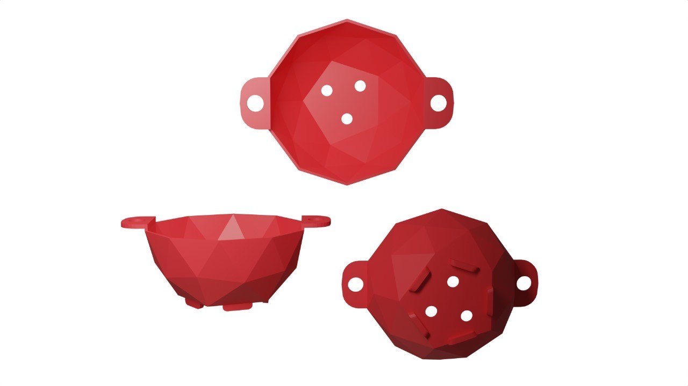
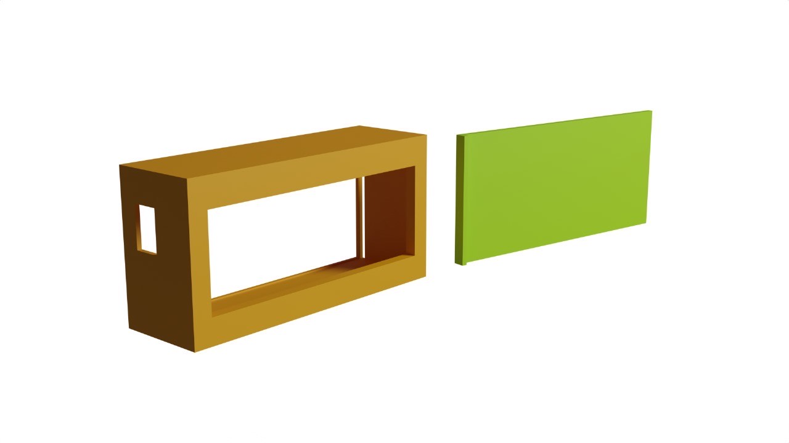
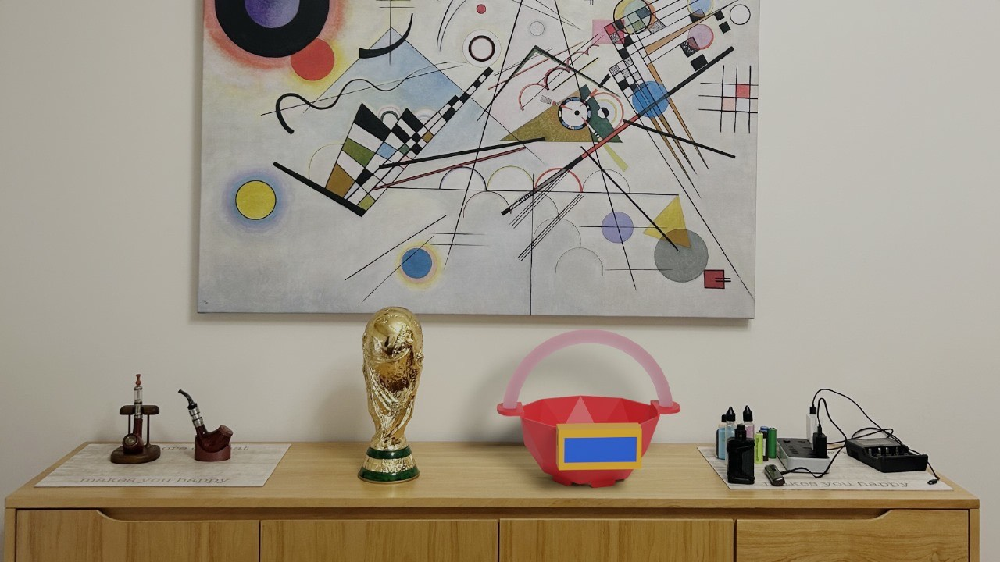
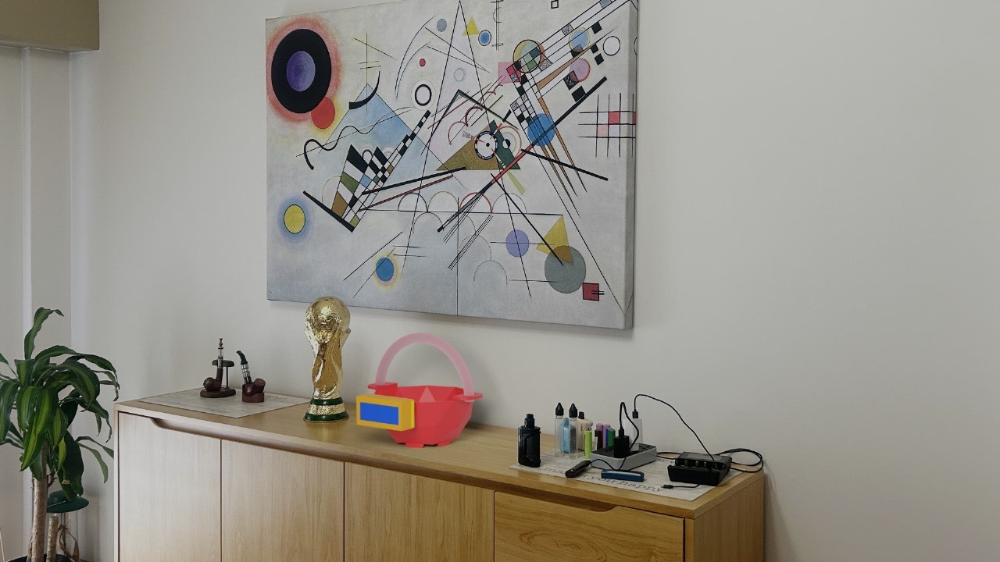

Una maceta con un sistema de autorriego, es decir, riega a la planta de manera automática cuando esta lo necesita, ya que detecta en qué momento la planta requiere más agua mediante un sensor de humedad, mostrando en la pantalla el último riego que recibió, a través de un temporizador que indica las horas, minutos y segundos ($00:00:00$).
Al terminar de regar, las luces LED UV, que están dentro de un tubo de manguera transparente, la cual rodea la planta, se encenderán para poder fortalecer su crecimiento.
La maceta consta de un compartimento (el cual se puede poner y sacar las veces que desee) para poder guardar los componentes electrónicos utilizados y de una pantalla protegida por una caja, la cual puedes sacar y poner con facilidad mediante un imán.
Objetivos y Metas
El objetivo principal es automatizar y simplificar el cuidado de las plantas** a través de nuestro sistema. Gracias a esta tecnología, se optimiza el uso del agua, se mejora la salud de las plantas y organiza el tiempo del usuario, facilitando el mantenimiento a aquellos que no tienen suficiente tiempo para estar pendiente del cuidado.
Metas:
Fomentar el cuidado de las plantas, tanto el riego como la exposición a la luz que necesita.
Crear un producto sencillo, útil, eficiente y de bajo costo.
Facilitar el cuidado de las plantas a las personas que no tienen el tiempo para ocuparse de ellas o a quienes no tengan mucha movilidad para hacerlo.
¿A Quiénes Está Dirigido?
Está dirigido principalmente a adultos mayores con dificultades de movilidad o personas ocupadas que no tienen el tiempo para estar pendientes al cuidado que necesita la planta, y gracias a este producto pueden relajarse y despreocuparse.
Ejemplo de Perfil de Usuario
Mujer de 40 años, con trabajo de horario completo, se encarga de cuidar a sus 2 hijos haciéndoles la comida, lavando la ropa y más tareas del hogar. No tiene tanto tiempo para poder encargarse del cuidado de sus plantas, pues esta maceta la ayudaría mucho a poder tener sus plantas sanas y fuertes y tener una linda decoración en su casa.
Diferencia de la Competencia
Esta maceta se diferencia de la competencia, ya que, además de incluir un sistema de autorriego como las demás, esta cuenta con luces ultra UV para el crecimiento y una pantalla con temporizador del último riego.
Además, tanto la maceta como la caja de la pantalla están hechas de filamento de impresión 3D, siendo un diseño único y extravagante, distinto a los que se suelen ver.
Materia: Proyecto de Producción | Curso: 5to "A" | Integrantes: Pita, Lopez, Fernandez, Montenegro, Dzurjovcin y Nava
💻 Modelos 3D y Renderizados de Blender
Impresiones 3D
La maceta y la caja de la pantalla están hechas por una impresora 3D. A continuación dejamos los diseños que utilizamos para imprimir las piezas:

Modelo Blender de la maceta

Modelo Blender de la caja de la pantalla
Renderizados
Los renderizados son una representación gráfica del producto. El objetivo es crear una imagen con el que mostrar un concepto, idea o proyecto de forma digital y realista. A continuación mostramos los renders que realizamos:

Render perspectiva 1

Render perspectiva 2
Render perspectiva 3
Render con fondo infinito
💡 Electrónica y Funcionamiento Robótico
HydroPot opera con un sistema autónomo impulsado por el **Arduino Nano**, programado para tomar decisiones de riego.
Componentes Clave:
Arduino Nano:El cerebro que ejecuta el programa informático.
Sensor de Humedad: Los "ojos" del sistema. Mide la humedad y le indica al Arduino cuándo regar.
Bomba de Agua: El "músculo". Riega solo cuando el sensor lo indica.
Tiras LED (Ultra UV): Proporcionan la luz solar necesaria para un crecimiento fuerte.
Pantalla: Muestra el último riego con un temporizador (00:00:00).
Indicadores Visuales:
El estado de la planta se visualiza con tres luces LED:
**Verde:** Totalmente hidratada.
**Amarilla:** Punto medio de hidratación.
**Roja:** Necesita ser regada.
⚙️ Programación del Sistema y Pantalla
El código establece la lógica de riego y el funcionamiento del temporizador que se muestra en la Pantalla.
Simulación de la Pantalla:
Último Riego Hace:
00:00:00
Fragmento de Código Clave (Arduino/C++):
// ----------------------------------------------------
// HydroPot: Código Principal de Autorriego (Arduino Nano)
// ----------------------------------------------------
#include <Wire.h>
#include <LiquidCrystal_I2C.h>
// Inicialización de la pantalla LCD (Dirección I2C 0x27)
LiquidCrystal_I2C lcd(0x27, 16, 2);
// Asignación de Pines
const int SENSOR_HUMEDAD_PIN = A0; // Sensor de Humedad (Entrada Analógica)
const int BOMBA_PIN = 8; // Bomba de Agua (Salida Digital)
const int LED_ROJO = 4; // LED de Indicador de Baja Humedad
const int LED_UV_PIN = 9; // Tiras LED Ultra UV (Activación de crecimiento)
int valorHumedad = 0; // Valor leído del sensor
unsigned long ultimoRiegoMillis = 0; // Almacena el tiempo del último riego
bool estaRegando = false; // Bandera de estado actual
void setup() {
// Configuración de Pines
pinMode(BOMBA_PIN, OUTPUT);
pinMode(LED_ROJO, OUTPUT);
pinMode(LED_UV_PIN, OUTPUT); // Inicializamos el pin de las luces UV
// Inicialización de la pantalla LCD
lcd.init();
lcd.backlight();
lcd.setCursor(0, 0);
lcd.print("HYDRO POT - ON");
delay(2000);
lcd.clear();
}
void loop() {
valorHumedad = analogRead(SENSOR_HUMEDAD_PIN); // Lee el nivel de humedad
// 1. Lógica de Riego (Umbral de humedad)
// Si la humedad cae por debajo de 630 (Tierra seca) y no estamos ya regando, iniciar.
if (valorHumedad > 630 && !estaRegando) {
iniciarRiego();
}
// 2. Control de LEDs (Indicadores visuales)
if (valorHumedad > 600) { // Muy seco (umbral alto)
digitalWrite(LED_ROJO, HIGH);
// Nota: Los LEDs Verde y Amarillo se controlan dentro de iniciarRiego/mostrarTiempo
} else {
digitalWrite(LED_ROJO, LOW);
}
// 3. Mostrar estado o temporizador
mostrarTiempo(millis());
delay(1000);
}
// Función que ejecuta el ciclo de riego
void iniciarRiego() {
estaRegando = true;
// Estado: REGANDO
lcd.clear();
lcd.setCursor(0, 0);
lcd.print("Regando...");
digitalWrite(LED_ROJO, LOW); // Apaga el LED rojo
// Activa la bomba por 5 segundos
digitalWrite(BOMBA_PIN, HIGH);
delay(5000); // 5 segundos de riego
digitalWrite(BOMBA_PIN, LOW);
// Activa las luces Ultra UV y guarda el tiempo
digitalWrite(LED_UV_PIN, HIGH); // Las luces UV se encienden al terminar el riego
ultimoRiegoMillis = millis(); // Guarda el momento exacto
estaRegando = false;
}
// Función que calcula y muestra el tiempo desde el último riego
void mostrarTiempo(unsigned long tiempoActual) {
if (ultimoRiegoMillis == 0 || estaRegando) return;
unsigned long tiempoPasado = (tiempoActual - ultimoRiegoMillis) / 1000; // Segundos
int horas = tiempoPasado / 3600;
int minutos = (tiempoPasado % 3600) / 60;
int segundos = tiempoPasado % 60;
// Muestra el temporizador en el LCD
lcd.setCursor(0, 0);
lcd.print("Ult. riego:");
lcd.setCursor(0, 1);
// Formatea HH:MM:SS (con ceros iniciales)
if (horas < 10) lcd.print("0"); lcd.print(horas); lcd.print(":");
if (minutos < 10) lcd.print("0"); lcd.print(minutos); lcd.print(":");
if (segundos < 10) lcd.print("0"); lcd.print(segundos);
}
// ----------------------------------------------------
Diferencia de la Competencia: Nuestro temporizador e indicador de luces facilitan al usuario la detección de fallos técnicos y el monitoreo del estado de la planta.
📘 Manual de Uso: ¿Cómo se utiliza?
Sigue estos 8 sencillos pasos para comenzar a usar HydroPot.
PASO 1: Enchufar el transformador.
Conecte el transformador del sistema HydroPot a la corriente eléctrica (220V).
PASO 2: Conexión del tubo corto.
El tubo corto de la bomba de agua se introduce en los agujeros que hay por debajo de la maceta, conectando el sistema de riego interno.
PASO 3: Conexión del tubo largo.
Introducir el tubo largo de la bomba de agua en un recipiente aparte que sirva como depósito de agua.
PASO 4: Colocar tierra y planta.
Coloque la tierra y la planta en el cuerpo principal de la maceta. Asegúrese de que la planta esté centrada y la tierra asentada.
PASO 5: Introducir el sensor.
Introducir el sensor de humedad en la tierra, a una profundidad media. Debe estar conectado al cableado del compartimento electrónico.
PASO 6: Unir la pantalla.
Unir la pantalla con la maceta mediante los imanes que estos tienen, colocándola en el lugar visible.
PASO 7: Encender el Arduino.
Encienda el Arduino (esto puede ocurrir automáticamente al enchufar el transformador en el Paso 1, dependiendo de su configuración).
PASO 8: Primer riego manual.
Riegue la maceta por primera vez de forma manual para iniciar la medición de humedad en el punto óptimo.